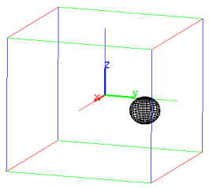

26.2.16 Joining audio clips together
The splice
command joins two audio clips together with an overlap and optionally a crossfade.
-
splice takes two mandatory arguments and one or two optional arguments:
-
A, an audio clip.
- B, an audio clip with the same number of channels,
bit depth and sample rate as A.
- Optionally, len, a positive real number defining the overlap size
(by default, len is the minimum of 0.5· s, LA/2, and LB/2, where
LA and LB are the lengths of A and B in samples and s is the sample rate).
- Optionally, p, a real number defining the crossfade curve
(by default, p is computed automatically, see below).
- splice(A,B ⟨,len,p ⟩)
returns the audio clip obtained by splicing A and B with an overlap
of len samples and a crossfade which is computed using the function
f(x)=xp, x∈[0,1], for p>0.
- For positively correlated audio data on the overlap, it is best to set p=1.0
(constant gain crossfade), while for zero-correlated data p=0.5 (constant power crossfade)
works better. If p is not specified, it is computed automatically in [0.5,1.0]
such that p−0.5 is proportional to the absolute value of the cosine distance between
the overlapping data. Setting p=0 disables crossfading and thus the overlapped data is
simply added together.
Example
We load an audio file containing a speech2
and normalize it.
| clip:=normalize(readwav("/home/luka/Downloads/gettysburg.wav"),-1) |
|
| |
a sound clip with 387574 samples at 22050 Hz (16 bit, mono)
| | | | | | | | | | |
|
We want to remove the portion of the speech between 5.6 and 10.5 seconds.
In order to do so, we splice the portions on the left and right,
using an overlap of size 0.25 seconds.
We plot the audio and mark the portion with a yellow rectangle.
| t1:=5.6:; t2:=10.5:; cfl:=0.25:; |
| rectangle(t1-i,t2-i,t2+i,display=yellow+filled); plotwav(clip); |

Now we extract audio from 0 to t1 and from t2 to the end and splice the
resulting clips with an automatic crossfade. First we need to convert t1
and t2 to sample offsets.
| sr:=samplerate(clip):;
n:=round(sr*t1):; m:=round(sr*t2):;
snd:=splice(clip(0,n),clip(m),cfl) |
|
| |
a sound clip with 274016 samples at 22050 Hz (16 bit, mono)
| | | | | | | | | | |
|